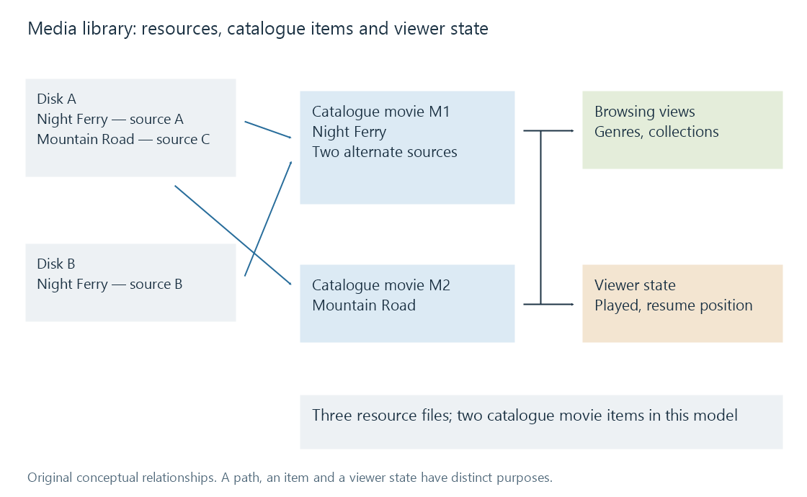

What is a media library?
A media library is a catalogue that relates media resources to descriptive information, browsing views and playback state.
Put two encodes of a movie on a disk and the file manager shows two files. A media library can present one movie, offer a choice of versions, attach its poster and synopsis, and remember where a particular viewer stopped. The library supplies the relationships that a directory listing does not.
In Emby, a configured library brings one or more physical folders into a browsing area with a content type. The folders contain the resources; the server builds a catalogue from what it finds. That distinction explains how films spread across two disks can appear together without copying them onto one disk.

The diagram is an original conceptual model. It does not reproduce Emby's database tables.
What the catalogue adds
A file has a path, a size and encoded streams. A library item has meaning: a movie, an episode, a song or a photograph. Its metadata can supply names, credits and relationships. Technical analysis supplies details such as duration and audio tracks.
Those descriptions make different questions possible. “What is in this directory?” asks about storage. “Which unwatched dramas were released in the 1990s?” asks about catalogue fields and a viewer's history. A poster grid answers the second kind of question even when its items occupy unrelated directories.
The item also connects browsing to playback. Choosing a movie leads to an available media source; selecting a subtitle track refers to that source's streams. An attractive catalogue entry and a playable resource are separate pieces of the same system.
Three changes, three different results
Add another encode. The bytes on disk increase. If the new file is recognized as an alternate version, the movie count need not increase. The item gains another source.
Add a movie to a collection. Its grouping changes. Its file can remain exactly where it was, and the movie can still appear in the main movie view. Collections add membership rather than another copy of the film.
Disconnect a disk. A stored description does not make its media readable. Depending on the server's scan and availability behavior, an entry may remain temporarily or change during reconciliation. Its poster is evidence that an item was catalogued, not evidence that every source is currently reachable.